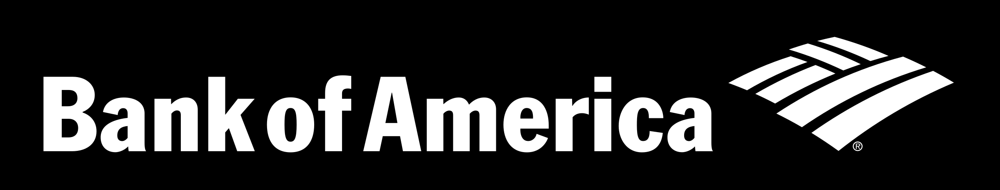
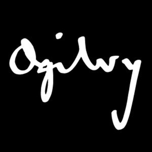
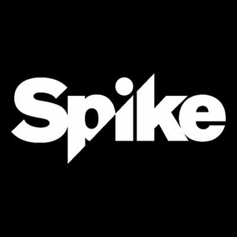
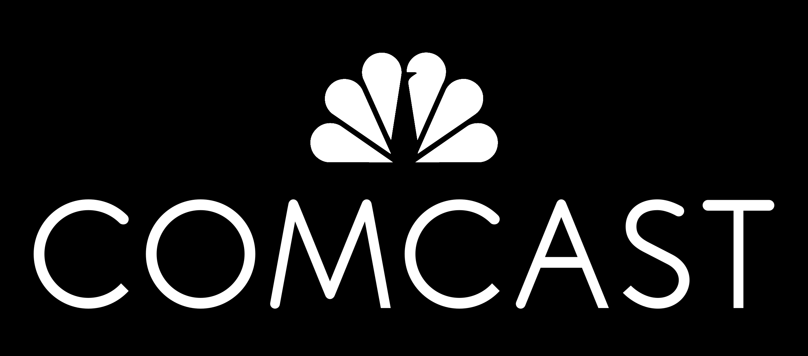

My Story
From art direction to service and experience design leadership
I started in brand and art direction: key art for Nickelodeon and Spike TV, national campaigns for Comcast, healthcare storytelling for Ogilvy CommonHealth. That craft foundation is still what shapes every system I build today: clarity, emotional connection, and a bias toward making complex things feel simple.
Over the last decade that craft scaled into leadership, directing global teams, owning research and strategy for Fortune 100 platforms, and sitting in the room where executive decisions get made. I don't just design experiences; I build the teams, systems, and evidence that make good design decisions repeatable.



